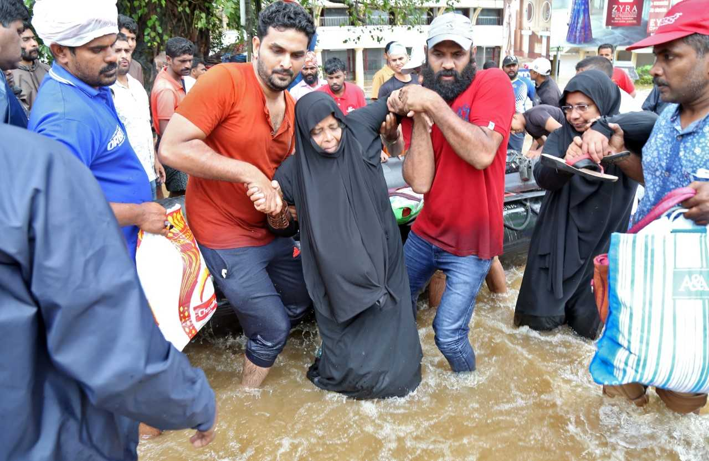
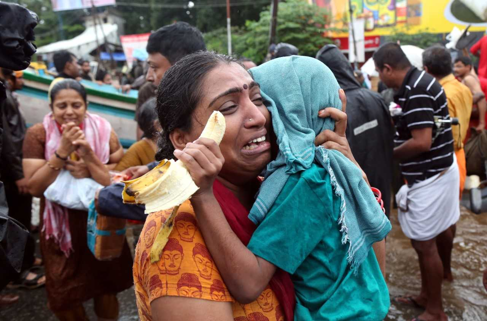
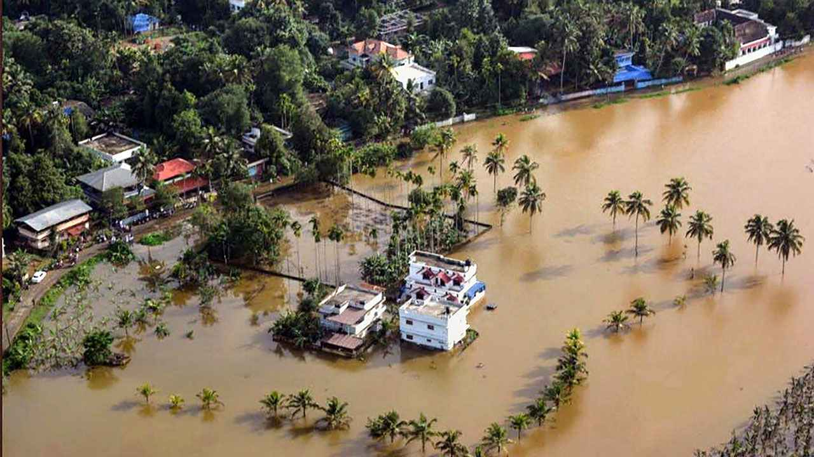

This may be the worst deluge in living memory of kerala
Military teams as well as disaster response forces and local fishermen reached some of the worst-hit areas.
Helicopters also brought much-needed supplies to communities cut off by two weeks of incessant rain.
More than 370 people have been killed, most of them in landslides, since the monsoon started in June.
There have been 52 rescue teams of central forces including units of the Indian Army and the Indian Navy and state governed forces like Kerala Police , Kerala Fire and Rescue Services assisted the civilian administration in rescue work and restoration. In addition to the 10 teams of the National Disaster Response Force, four additional teams were airlifted from Guntur and Arakkonam to assist the Ernakulam district administration. The Centre reached out to Kerala, offering a helping hand to tackle the situation. Union Minister for Home Affairs Rajnath Singh conducted an aerial survey of Idukki and Ernakulam districts along with Chief Minister Pinarayi Vijayan
Fisherman from Thiruvananthapuram and Kollam districts takes part in the rescue operations with their boats and rescued several who were trapped in their homes amid rising waters at a time. Kerala Government calls the fishermen as "Coastal warriors " of Kerala and announced financial aid for their support and effort in the rescue mission.
Mananthavady and Vythiri in the hilly Wayanad district have been totally cut-off, with roads washed away.
According to the latest official figures, more than 800,000 people have been lodged in over 4,000 relief camps across 14 districts. On August 19, the state's Chief Minister Pinarayi Vijayan vowed "to save even the last person stranded."
India's armed services are stepping up efforts to rescue thousands of people stranded by flooding in southern Kerala state that has killed 324 people.
Hundreds of troops, and dozens of boats and helicopters are helping to evacuate people from what officials say is the worst flooding there in a century.
Many people are still believed to be trapped on rooftops of flooded homes.
The state government has decided to sanction Rs 121.01 crore as flood relief, Chief Minister Pinarayi Vijayan informed the Assembly.

This includes Rs 64.19 crore as compensation for damages sustained in 2018 and Rs 56.82 crore for settling dues dating from 2016. Revenue Minister E Chandrasekharan read out the statement made under Rule 300 on behalf of the Chief Minister. Monsoon-related incidents have so far claimed 56 lives, destroyed 255 houses and damaged crops in 4217.91 hectares across the state since November 29, the day the south-west monsoon set in over the state.

The government has also entrusted a panel headed by the Additional Chief Secretary (Revenue) to prepare guidelines for tackling natural calamities with special reference to the special characteristics of the state. The committee has as its convener the secretary, State Disaster Management Authority. The director, Kerala State Remote Sensing and Environment Centre (KSREC); Dr V P Dineshan of the Centre for Water Resources Development and Management; Dr S Abhilash of the Cochin University of Science and Technology; G Shankar, senior consultant, National Centre for Earth Science Studies, and a representative of the Geological Survey of India, are its members.
District collectors concerned have been instructed to hold special camps for replacing documents and certificates that have gone missing in monsoon-related mishaps. In Kattipara panchayat in Kozhikode which faced the brunt of the disaster, the death toll stands at 14. Nine persons were rescued. Steps are being taken to restore traffic along the Thamarassery ghat road where 50 metres of the protection wall has collapsed.
MENTION ABOUT AN APPLICATION/TECHNOLOGY THAT YOU WISH TO DEVELOP IN-ORDER TO WITHSTAND THE DISASTER

“The main reasons for floods have been assessed high-intensity rainfall in short duration, poor or inadequate drainage capacity, unplanned reservoir regulation and failure of flood control structures”
So a better way to resolve this problem is that, by creating a seperate way from dam to the sea,so that exceeded water from the dam due to rain can go to the sea and chances to cause flood can be decreased.